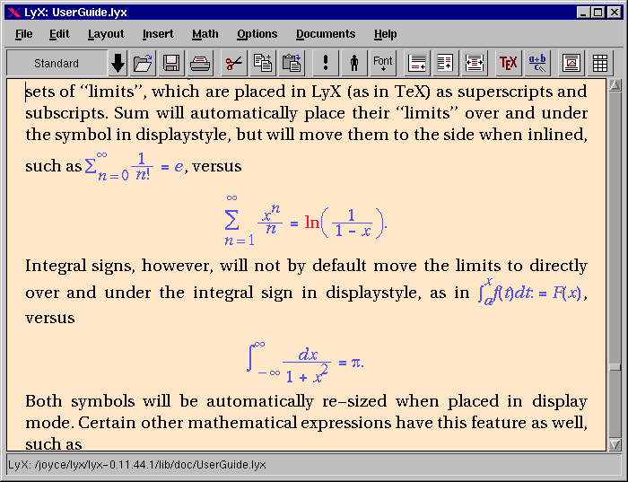
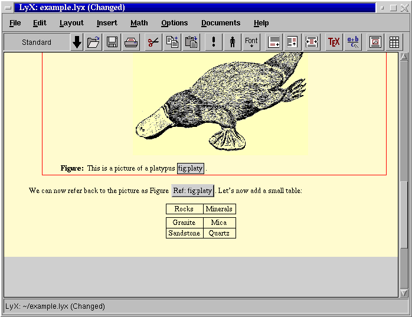
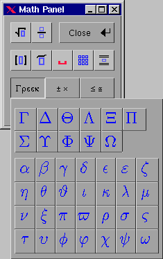

用上面元素寫出來的原始檔通常副檔名分別為.tex .sgml， tex需要轉成一個與裝置(device)無關(independent)dvi檔， 再由這個檔案經由dvi driver轉成其它格式或輸出， tex->dvi->ps,pdf,html....
$ latex sample.tex
|
$ bg5latex sample.tex
|
接下來
$ dvips sample.dvi -o sample.ps
$ pdflatex sample.tex
$ latex2html sample.tex
$ latex2rtf sample.tex
|
$ dvilj sample.dvi
|
SGML通常有個sgmltools，有四個簡單scripts
$ db2html sample.sgml
$ db2ps sample.sgml
$ db2pdf sample.sgml
$ db2rtf sample.sgml
|
latex轉換時會跑出
aux: LaTeX做出的檔 有關目錄(table of content)交互參照(cross reference)等資訊
log: 有關於tex -> dvi時的錯誤訊息
dvi: TeX輸出檔device-independent file留待其它driver來轉換成其它格式
dvi 可以用 xdvi來看
pdf 可以用gv或acroread來看
ps 用gv看或直接丟進雷射印表機
|
SGML的線上參考請看
http://www.oreilly.com/catalog/docbook/
LaTeX的線上入門參考請看
http://www.ctan.org/starter/?action=/index.html
http://tex.loria.fr/general/latex2e.html 不過LaTeX還是去買一本書的好， 另外有個可見即所得的LaTeX編輯器叫lyx，
Figure 2-3. LyX主視窗

Figure 2-4. LyX圖形

Figure 2-5. LyX數學
